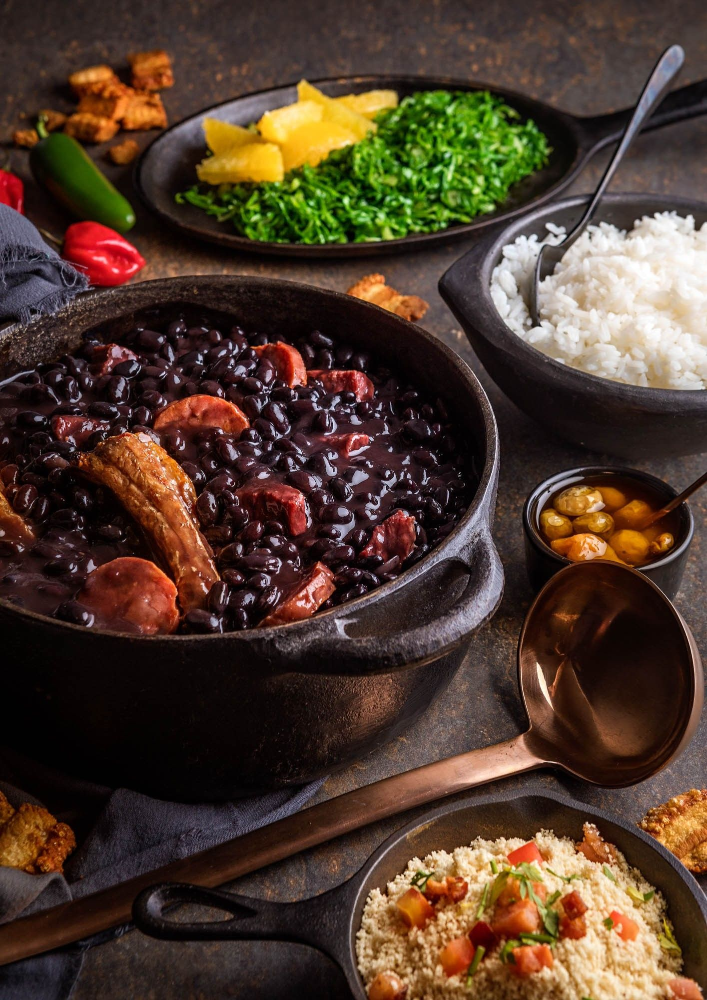
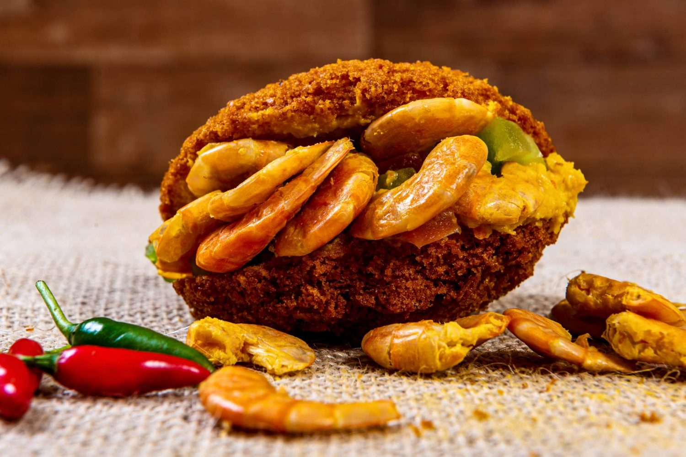
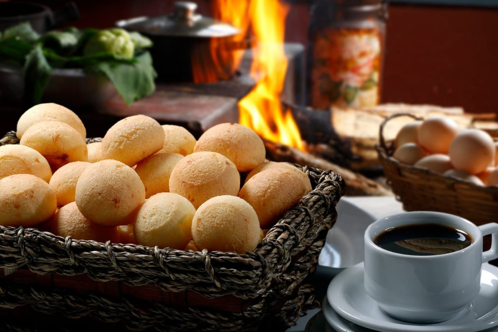

A Riqueza da Nossa Culinária
Descubra os ingredientes, as cores e os sabores que encantam estrangeiros e locais.
Feijoada

A feijoada é um dos pratos mais tradicionais e emblemáticos da gastronomia brasileira. Feita à base de feijão preto, é preparada com diferentes carnes, resultando num sabor intenso e marcante. Muito mais do que uma refeição, a feijoada representa cultura e convivência, reunindo famílias e amigos à volta da mesa.
Acarajé

O acarajé é um prato típico da culinária baiana. Feito com massa de feijão-fradinho e frito em azeite de dendê, é crocante por fora e macio por dentro. Tradicionalmente, é recheado com vatapá, caruru e camarão seco. Além de delicioso, o acarajé carrega forte valor cultural, sendo um símbolo da herança africana.
Pão de Queijo

O pão de queijo é um dos quitutes mais famosos do Brasil, especialmente de Minas Gerais. Feito com polvilho e queijo, possui casca crocante e interior macio, sendo servido geralmente quente. Muito apreciado ao pequeno-almoço ou lanche, é um símbolo do sabor da culinária brasileira.